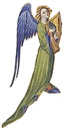

|
1. Didostait da gleved kana an disparti
|
22. Ni 'n em gavo ker gwir, ker
gwir ma 'z an bremañ,
Dirak ar varn c'harv, siwazh ! ken a grenan ! 23. Ken a grenan, siwazh ! ken ven ha ken dister Hag an delien lammet gant ur barrad-amzer.- 24. Doue glev anezhan, Doue respont buhan ; - Ai ta, ene paour, ne vi ket pell e poan -, 25. Te 'peus ma servijet dre 'm out bet war ar bed, Ha bremañ te po lod eus-a va joausted.- 26. Eñ d'ober, o pignat, ur sell c'hoazh ouzh an traoñ, Ha gweled e gorf paour stegnet war ar varskaoñ. AN ENE 27 .- Demat dit-te, va c'horf, demat a laran dit, Distreiñ a ran en-dro, gant kalz truez ouzhit. AR C'HORF 28. - Tavit, o ene kaezh, gant komzoù alaouret, Poultr ha breignadurezh n'eus keer truez ebed. AN ENE 29. - Salokras, o va c'horf, dellezout a rez 'vat Kerkoulz hag ar pod-pri oe ennañ louzoù-mat AR C'HORF 30. Kenavo 'ta, buhez, kenavo pa 'z eo ret ! Doue d'ho c'has d'al lec'h m'hoc'h eus c'hoant da vonet 31. C'hwi vo dihun bepred, me, siwazh ! a gousko ! N'am ankounac'hit ket, hag hastit an distro. 32. Na penaos a rit-hu, lavarit-hu din-me ? Ken drant ouzh ma c'huitaat, ken digonfort on-me AN ENE. 33. - Eskemmañ drein garv gant rozennoù 'm eus graet Ha gant mel meurbet dous ur vestl c'hwerv-meurbet.- 34. Neuze, laouen ha skañv evel un alc'hweder ; An ene sav, e sav, e sav e-barzh an aer. 35. Hag evel m'eo degoue'et, skeiñ a ra war an nor, Ha d'an aotrou Sant Per hi a c'houlenn digor. AN ENE. 36. Oh ! c'hwi ' aotrou Sant Per, a zo karantezus, C'hwi am digemero e baradoz Jezuz ? SANT-PER. 37. E baradoz Jezuz e vi digemeret, Rak tra ma oas er bed He zigemer peus graet.- 38. Hag en ur vonet tre eñ a zistro en-dro, Hag a wel e gorf paour 'vel ur bern douar-gozh. AN ENE. 39. Kenavo dit, va c'horf, ha da drugarekaat ; Kenavo, kenavo da draonienn Jozafat. 40. Me glev ur veuleudi 'vel na glevis he far, Tizh zo war ar c'houmoul, ar gouloù deiz a bar ! 41. Setu me o vleuniañ evel ur boudig roz A-hed gwazh ar Vuhez e liorzh ar baradoz. |